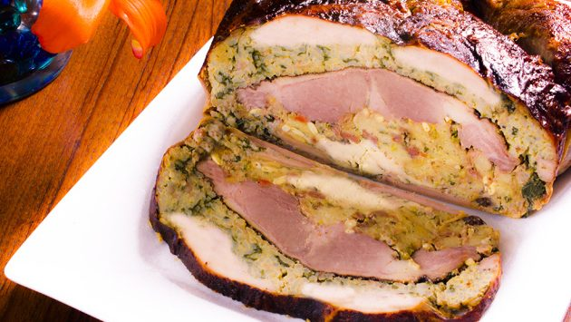

Welcome to the easiest recipe ever!

Ingredients:
- 1 cup salt
- 1 cup brown sugar
- 4 litres water
- 8-10 kg turkey skin intact and boned except for drumsticks
- 1.8 kg duck boned
- 1.8 kg chicken boned
For seasoning:
- Paprika
- 1 cup salt
- 1/4 cup black pepper
- 1/4 cup garlic powder
Cornbread:
- 1 cup cornmeal or crushed up corn chips
- 1/2 cup self raising flour
- 3/4 cup buttermilk
- 2 eggs
- 2 tbsp rice bran oil
Stuffing
- 7 slices white bread dried in warm oven
- 10 dry crackers
- cornbread as above
- 2 cups chopped celery
- 1 large onion chopped
- 8 tbsp butter
- 7 cups chicken stock
- 1 tsp salt
- 1/2 tsp freshly ground black pepper
- 1 tsp dried sage
- 1 tbsp chicken salt
- 5 eggs beaten
After seeing all these ingregidents, if you still keep scrolling down... well... APPRECIATED...
Now, the instructions!
- Mix the seasoning ingredients. The mix will keep in an airtight container for up to 6 months.
- Make your cornbread. Preheat oven to 180°C.
- Combine all ingredients and pour into a greased shallow baking dish. Bake for approximately 20–25 minutes. Remove from oven and let cool.
- To make the stuffing, crumble dried white bread slices, made cornbread and crackers. Mix together and set aside. Sauté chopped celery and onion in butter until transparent, approximately 5 to 10 minutes. Pour over the bread/cracker crumbs. Add stock, mix well and add salt, pepper, sage and poultry seasoning. Add beaten eggs and mix well. Follow instructions below to stuff the birds.
AAAAAAAND, IT IS TIME TO MAKE THE TURDUCKEN!
- To make the brine: Mix salt and sugar with the water. Brine is ready when the mixture is completely dissolved. If the water is heated to quicken the process, make sure it is cooled to room temperature before placing meat in. Let the 3 birds sit in the brine in the fridge overnight.
- Preheat oven to 260°C.
- Lay turkey skin side down on a flat surface. Dust your turkey with your made seasoning and add 1cm layer of stuffing. Lay duck skin side down on top of stuffing. Dust duck with seasoning and add 1cm layer of stuffing. Repeat with the chicken.
- Begin trussing up the turkey at the neck. Insert metal skewer about 2cm from the edge and up through the other side. Run butcher's twine between skin and skewer and tighten to draw both sides together. Continue down to legs. With every other skewer, draw together the duck and chicken skin. Tie together turkey legs to resemble standard turkey. Dust turkey skin with paprika.
- Roast your turducken for 15 minutes at the high heat, then turn the oven down to 100°C to finish, approximately 3 hours. Remove turducken from the oven once the internal temperature in the chicken reaches 65 °C.
- Let rest for at least 20 minutes before carving.
- Cut across the middle of the breast completely through. Plate thin slices containing turkey, duck and chicken.
Enjoy your meal!